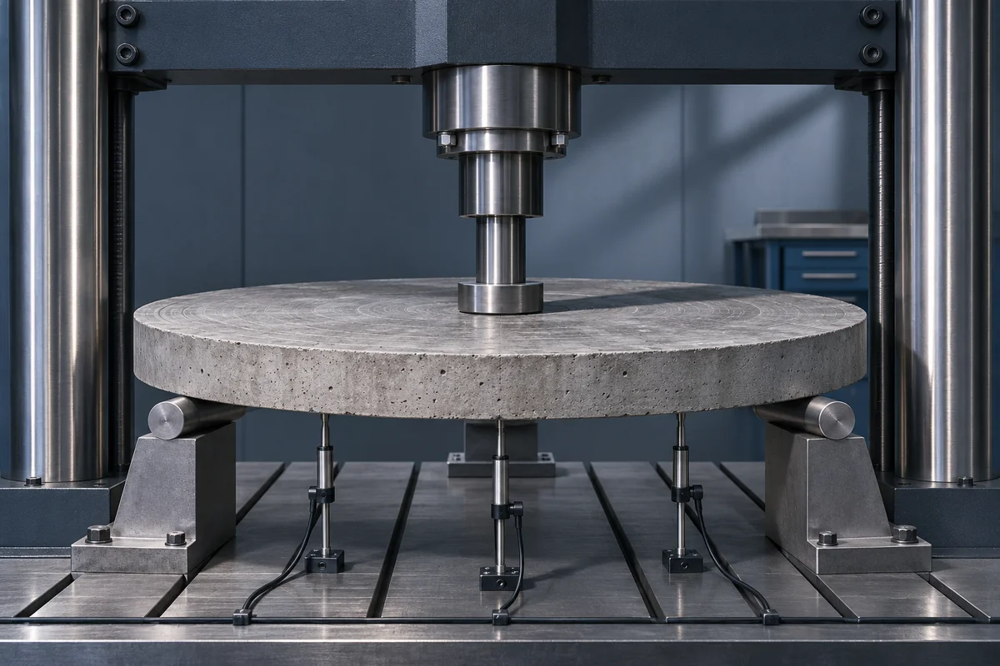
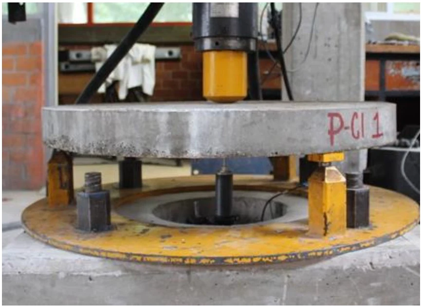

Mechanical design
Concrete panel testing fixture
A custom fixture and split molds for testing 500 mm concrete panels on an MTS load frame using a modified ASTM C1550 setup.

- Organization
- UC Pavement Research Center
- Design targets
- Up to 100 kN load, deflection approaching 40 mm
- Displacement measurement
- Three LVDTs
Designing for the test frame
The modified test called for round concrete panels with a 500 mm diameter. I designed the support fixture for the MTS load frame and modeled a separate, two-piece mold in Autodesk Fusion for casting the panels.

Integrating displacement measurement
I developed the support geometry and measurement layout around the expected panel movement. The design used three linear variable differential transformers (LVDTs) to measure displacement as the panel deflected under load.
Taking the design to fabrication
I prepared CAD models and fabrication specifications for the machined parts, supports, and mold. I coordinated component selection and revisions with the machine shop through production of fixture components.